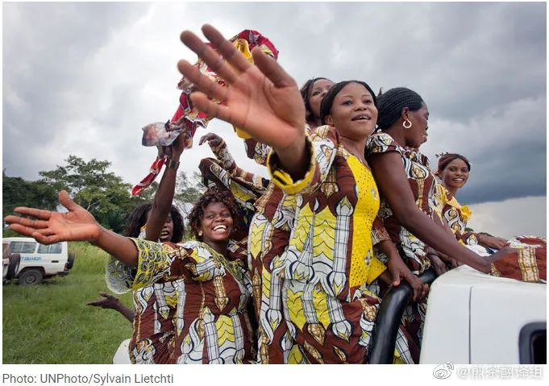
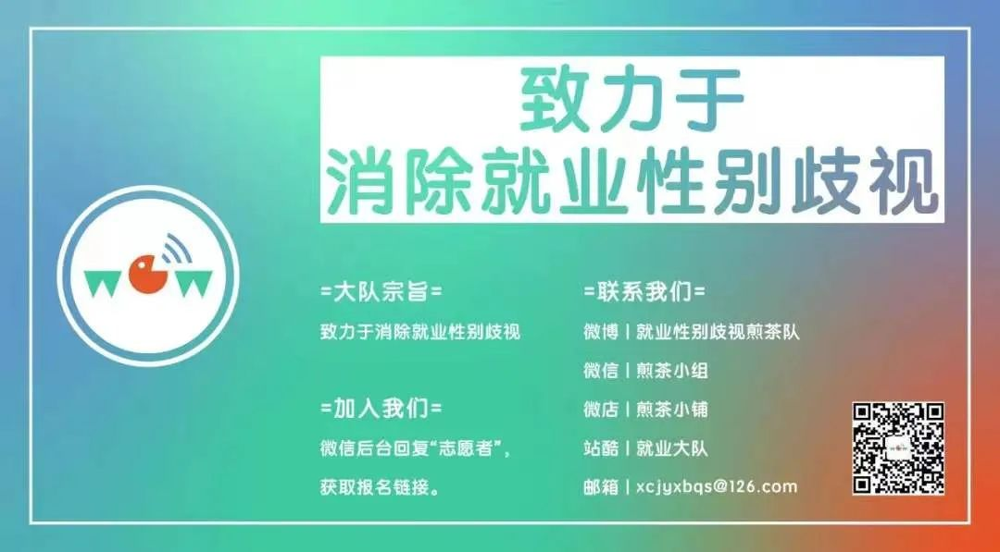

翻译社2021年12月|医药行业女性的职业困境

2016年，LifeSci公司被媒体曝光，在一次医药业界会议中雇佣女模特“招待”客户。而LifeSci对此发表公关声明：雇佣女模特是为了“在充满男性投资人和男性高管的医药行业会议中，实现性别多样化”。各大媒体发声质问：医药行业就是这样“实现性别多样化”的吗？
图片来源：bizjournals
每年进入医药行业的高学历人才中，男性和女性的人数几乎相等。但医药界的女性在职业生涯中很快会遇到玻璃天花板。最近的一份对全球超1000家上市公司的报告显示，上市医疗公司女性CEO占比仅4%，药品公司仅8%。另一份报告显示，在美国的生物技术行业，管理层女性仅占20%，监理会女性也仅有10%。
而在学术界，虽然女性获得了48%的医学学位，55%的生命科学博士学位，38%的医药化学博士学位，但女性很难获得资金或成为研究负责人，少数族裔女性则完全被排除。
一些大学招聘女性研究人员的进度极慢，斯坦福大学化学家Bertozzi说，“我这辈子见不到女性比例达到30%了。而一些顶尖学校招聘的女性，甚至用一只手就能数得过来”。Young，一位副总裁，提到在医疗化学领域，女性比例多年来保持在20%没有改善。
全球范围内卫生行业中的女性占人数的大部分。在美国，她们为自己和家人做出健康决策，同时为医疗保健经济贡献了3万亿美元。
即使有大量数据佐证医疗保健和制药行业需要女性，然而事实是男性占据了全球范围内健康保险公司和制药公司的大多数领导职位。这至关重要，领导者在关键组织决策例如招聘、晋升、工资和资源分配中扮演着重要的角色，而这决定了劳动力的性别组成。
在新冠疫情中，妇女承担了过多的照看感染者和学校停课带来的额外的家务。大多数医疗卫生工作者是女性，在抗击COVID-19时她们同样占大多数。
研究表明：医疗公司管理层中的女性越多，对公司和客户的好处越多
事实上，多元文化带来的商业利益是可以量化的。一项很有影响力的研究表明：在财富500强公司中，高管性别比例越平衡，公司业绩越好。
对此，一家医药初创公司CEO和创始人Molineaux的解释是，女性领导的研发团队工作更有效率，因为员工更有勇气表达自己的意见。另外她还认为，女性带领的团队更容易留住人才。
另一家生物医药公司总裁Shaw认为，明明在家庭中几乎全是女性在为家庭成员的健康做决定，但在行业中却鲜见女性作为高层为公司做决定。“在医药开发过程中排除这些女性的声音，对整个行业来讲都是不明智的”，她说。
研究表明，制药公司董事会中女性的存在会促使有严重问题的产品更快地被召回，同时低风险产品缺陷的发现机率也会增加120%。
图片来源：theconversation
每年大约有4500种经美国食品和药物管理局(FDA)批准的产品会被从货架上召回，要么是由于可能导致消费者死亡或受到伤害的高严重性缺陷，或产品存在某些低严重性缺陷。美国圣母大学(University of Notre Dame)的研究表明，女性公司董事可能对问题药品的召回速度和可能性有重大影响。
圣母大学门多萨商学院(Notre Dame 's Mendoza College of Business)信息技术、分析和运营助理教授凯特琳•沃瓦克(Kaitlin Wowak)是该研究的第一作者。她指出，消费者从快速召回缺陷产品中获益最多，同时企业损失最大，因为召回会让它们面临最公开、监管和股市惩罚。因此，研究人员得出结论，高风险决策可能需要更多女性参与，以推动公司更快地采取行动。
他们发表在《制造与服务运营管理》(Manufacturing & Service Operations Management)上的研究分析了2002年至2013年间的4,721起药品召回事件。这些产品来自92家受FDA监管的上市公司。该研究发现，董事会中女性越多，召回的效率就越高。与全男性董事会相比，有女性成员的董事会宣布高级别召回的时间要快28天，报告延迟时间减少了35%。
沃瓦克解释说:“一个女董事不足以促使公司更快地采取召回问题药品的行动。”“至少需要两名女性董事才能影响到严重产品召回的及时性，如果有三名女性董事，事情就会进展得更快。”
“我们确信，我们的研究证明，增加女性董事和不增加女性董事的公司在非常现实和重要的结果上存在差异。进一步说，我们与最近的社会呼声保持一致，即董事会所有董事应该突破限制，对所有利益相关者做出更积极的回应，尤其是在产品可能伤害或杀死客户的情况下。”
但事实上：医疗公司的管理层和核心部门几乎完全受男性把持
美国化学协会旗下的《化学和工科新闻》采访了几十位生物和医学学科的女性——她们活跃于学术界、创业公司和大医药公司。其中一些女性乐观认为，现在进入医药界的年轻女性能够受益于来之不易的职场多元文化；另一些女性则认为，医药行业的性别平等进程过于缓慢。改变不能只依赖于“多元化绩效考核达标”，而必须依靠对整个行业文化的彻底改造。
Torley，医疗初创公司CEO说，虽然现在呼吁性别平等的声音很大，但从统计数字上看，并没有什么进展。她希望至2025年，能实现管理层女性比例50%，监理会女性比例30%，并通过监理会促进董事会女性比例的增加。她认为直到目前，整个行业仍然“说得多做得少”。
另外，各医药公司为了达成监理会女性比例的指标，经常多公司邀请同一位女性身兼数职。Torley就曾同时接到6家生物医药公司监理会的邀请，另一位初创公司总裁Weber也收到多重邀请。但很多有资历的女性却完全不被重视。
《化学和工科新闻》调研了过去两年内在A轮融资中至少达成一千万美元的75家医药初创企业的监理会。在这75家公司中，39家的监理会仅有男性，而仅有2家的监理会中女性比例超过了30%（这些女性中还有可能重复计算了同一个人）。
Torley领导的生物行业创新协会成立了职业发展多元化和包容性工作组(WDDI)，她建立了一个女性监理会候选人数据库。在这个数据库中，每一位候选人都由生物行业创新协会的一名成员推荐，并附带推荐理由，包括候选人的专业技能和资历。她希望通过这个数据库增加女性候选人的曝光率。
但Weber和Shaw认为，增加曝光率可能无助于改善行业中的性别不平等。她们都提到，在收到多份监理会邀请时，各个公司都会告诉她们，这不是因为她们有30年行业经验，而是因为她们是“女性”，是“热门商品”。
这令她们感到愤怒：在努力工作几十年后，过人的能力和资历不能给她们带来职业机会，但现在她们因为能帮一些人达成多元化业绩指标，就突然得到了机会。
事实是，监理会性别比例的业绩最容易达标。但在行业中男性把持的领域，改变极其困难。比如医药行业初创公司创始人几乎全部为白人男性。而即使有女性成为创始人，她们也鲜少掌握公司的技术命脉。
Glimcher，一位毕业于哈佛的著名免疫学家说，“30年前当我看到学术界只有少得可怜的几位女性实验室领导人时我认为，这种情况一定会改善的！但现在我没这么乐观了。”
没有任何一家美国或欧洲的大医药公司的研发机构由女性掌舵。即使在整个医药行业，女性研发负责人也极其稀少。“如果你让一个人描述一位首席科研官，没人会想象一位女性”，Molineaux说。
Kapeller是少有的医药公司女性首席科研官。在一次交流会议中，她意识到自己是受邀的12名研发领导人中唯一的女性，“而我身边很多女性朋友都是科学家！她们的研究都非常成功，为什么她们没法得到这些职位？”
偏见将女性排除在管理层以外
带着这个问题，高管培训师Harnden-Koehler采访了40位中层女科学家，21位经理，以及15位人力资源专家。她发现，阻止女性职业上升渠道的最主要因素，是她们的男主管和她们自己对“领导力”的理解大有不同。
图片来源：werepstem
女性更常用“我们”这类包容性词语，而男性则更常用“我”这种宣告所有权的词语。
女性在提出策略性建议时，经常附带提出一个或几个备选方案，而男性往往仅提出一种方案。
对女性而言，为错误担责是领导力的体现，但她们的男主管们把这种行为理解为“缺乏自信”。
一些参与了采访的职业女性在获知采访结果后大为诧异，“我知道我是习惯这么做事的，”受采访人Marcaurelle说，“但我从来不认为这样做不对。”对此，Harnden-Koehler的建议是，女性不需要改变自己，只需要在沟通中注意她们的男主管对“自信”和“商业头脑”的定义。
而这份报告同时也提出了一个更深刻的问题：医药行业一直推崇的“威严专断”到底是不是领导者气质的唯一体现，应否考虑融合其他类型的“领导力”？比如一位女科研领导人说，她的冷静风格经常被错认为是“不自信”的表现，而“嗓门大”则会受到重视。
同时，公司必须重新审视他们在招聘和升职流程中的偏见。一份对麻省超900家生物医药公司的调查发现，认为公司业绩测评流程中存在偏见的女性是男性的两倍。而在高级管理层，没有任何男性认为业绩测评中存在偏见，女性则达到了20%。
一家公司的副总裁Palestrant说，她常常意识到经理们如何评价工作申请人。“如果是男性申请人，经理们往往评价他的职业成就。而对女性申请人，经理们更多评价她们的个人风格和行为；能力是次要的。”
研究室领导人Stolz也提及，很多男性自己也知道他对女性的评价与评价男性不同。一个男性高级经理曾对她提到，男性同事间的意见不同不容易引起负面情绪，而男性对来自女性的不同意见则没有这种容忍度。“对女性来说，表现能力和魄力的行为很容易被视为撒泼。”Stolz说。
一些大公司正在试图改善招聘流程中的偏见。比如，传统的一对一面试变成了群面，这样所有人都能听到所有问题以及回答——透明度会暴露偏见。
另外大公司还会尽量使候选人更加多样化。但很多高管提及，当他们要求人力资源部门提供多样化候选人时，他们往往得到的是一打白人男性的简历。
Ruck，一家大医药公司的研发组负责人，有针对性地改善了这个传统上男性把持领域的文化。在过去4年中，她亲自参与校招，并说服公司对女性生物化学学生给予专项奖励。
她似乎成功了，而且在这个组里实现了良性循环：一个多元化的研发组更容易吸引多元化的申请人。“现在当女申请人来到办公室门口，她会说，哇，这里好多女同事！”
Ruck是13年前加入这家公司的。她看到仅有三分之一的同期女性留在了医药研发领域。一些学术界的女科学家也看到了同样的趋势。
很多年以来，不断有男性试图论证，生物医药行业的性别不平衡，并不是因为歧视，而是因为公司只招最优秀的员工。但创投公司合伙人Hutton驳斥了这一论调。她说，“如果男性高管们只从自己的关系网里招人，很遗憾这就是一个男性为主的环境。”而从关系网里招人，本身就不符合“只招最优秀员工”的说法。
总有人给女性建议：她们应该拓宽她们的人际关系网络。但职业女性们的回复是，男性也应该参与这一过程。“我参加过很多教育职业女性的培训”，Kapeller说，“但我们其实更需要同时教育男性和女性。”男性应学会更积极地支持女性，为她们的能力背书。当某个高管职位的继承者是男性们关起门来决定的，女性只能靠他们中一些人的支持。
另外一个经常用来否认性别歧视的借口，是女性必须为家庭付出更多。女性在年幼和年长家庭成员的照护中经常需要付出更多。但这不是归咎于她们的理由。一份报告表明，女性辞职的一大原因，恰恰是她们不愿在一个男性占绝大多数的环境里工作。
另外公司文化本身也排斥育儿。有女性正致力于改善这种情况。Glimcher作为医学院负责人，终于落实了学院中讨论多年的日托服务，并预留出60个席位给她将要招聘的年轻研究人员。更早时，当Glimcher还为NIH工作时，她就启动了一项人力资源政策，为实验室中所有有家庭照护责任的员工提供技术人员的支持。“还有很多事情需要落实，”她说，“为此我在努力筹更多的钱。”
“人们总在告诉女性她们该怎么做。现在我们需要转移讨论重点，告诉男性该怎么做。”Kapeller说。而Shaw担心，如果仅有女性和有色人种支持多样化，所有已经达成的进步也可能快速倒退回原点。“在我之前工作的地方，我在管理层招了很多女性和少数族裔。但在我离开的一年内，所有的改变又都变回去了。我怎么才能让改变更持久？”
仍然坚持在生物医药技术行业的女性们希望能有更多女性决定留下来。“总得有人打破旧模式。”她们说。
医药行业现状：大量女性提供劳动，但男性负责领导

图片来源：unwomen
在全球卫生从业中占大多数的女性并未在在领导和决策职位中获得对等的席位。这些男女差距突显了全球卫生领域内的纵向隔离：妇女提供全球卫生服务，而男性则领导这些工作。Global Health 50/50 的一份报告显示，69%的全球卫生组织由男性领导，80%的全球卫生部门董事会主席是男性。全球健康组织中只有20％董事会性别平等，25％高层管理性别平等。
全球卫生领域中女性集中于薪酬低且通常无偿的工作。世界经济论坛2018年全球性别差距报告估计，各国的男女薪酬差距的平均水平约为16%。然而在卫生和社会保健部门这些差距更大更普遍，高收入国家男女薪酬约相差26%，中高收入国家约为29%。
此外，全球卫生领域性别差距的实例还包括工作场所发生的暴力和职场性骚扰，但由于对女性受害者的污名化的社会环境或害怕被报复，在大众眼里女性从业者需要面对的这些问题通常被忽视。
尽管男性和女性都可能面临暴力或性骚扰，但此类案件中女性受害者比例远高于男性。女性从业人员经常面临来自男同事、男患者和社区邻居的性骚扰。暴力和骚扰通过限制女性工作执行力、迫使她们辞去工作、打压她们事业心并带来情绪和身体上的双重折磨。
女性在领导层中的代表性不足，却过度集中于在护理和助产等某些岗位。这表明全球卫生领域还按性别横向隔离。以女性为主的领域，如护理和助产士，往往地位、薪酬和声望都较低。另一方面，男性享受高级领导职位、更高的地位和更高的薪水。即使男性进入女性主导的工作领域，他们更有可能爬上领导层。
药房员工在医疗保健系统中发挥着至关重要的作用，通过为个人提供第一联络点、提供医疗建议和确保药物的顺利供应来改善医疗保健结果。尽管全球药房员工中的女人人数多于男性，但在药房中担任高级职位和领导职位的女性人数仍然不足。
国际药学联合会(FIP)预测，到2030年，全球药店员工中70%以上将为女性。这是一个重大进步，因为在1970年，只有9%的女性从事医药相关工作。然而现在担任领导职务的女性仍然很少。
研究表明，肩负着家庭责任的女性药剂师们仍然非常专注于自己的工作，但女药剂师们想要在职场前进时存在一些障碍，最多的就是家庭责任和抚养下一代的重任。
世界各地医学院的女性入学人数虽然有所增加，但入学率因国家而异。例如，在巴基斯坦和斯里兰卡，女性药学入学率为50%，而智利的入学率较低。某些领域的男性入学率也较低，例如在巴基斯坦一所一流大学的生命科学学院，男性入学率不到20%。了解什么影响着女性参与药学教育是实现药剂领域性别平等的关键。
制药行业另一个突出问题是男女薪酬差异，这应归因于对女药剂师的性别歧视、专业指导缺位、团队协作缺少、职场话语权缺失以及雇主未能遵守男女机会平等的条例等因素。
女药剂师在各国之间存在差异。据报道，美国女药剂师的工作满意度更高，尽管她们的工作量很大，工资较低，与工作相关的压力因素也很大。而英国女社区药剂师的角色各不相同，但由于具有挑战性的工作环境和高职业要求，她们的工作满意度有所下降。伊朗男药剂师的工作满意度更高，原因是更好的工作保障、收入水平和发展前景。
在巴基斯坦，女药剂师比男药剂师具有更高的自我意识和同情心、社交技能强、工作与生活的平衡度更好以及工作满意度更高，并且普遍具有高情商。然而，职场文化、工作量和社会支持等因素是提高女药剂师生产力和大众接受度的重要组成部分。
此外，有趣的是，在包括巴基斯坦在内的大多数发展中国家，很少看到女性药剂师在社区药店工作。再加上这样一个事实，即这些零售店实际上并不强制要求有合格的人员，而且缺乏让这些女性药剂师参与社区药房所需的社会和文化支持。该部门具有巨大的潜力和机会，可以让女性推动由药剂师领导的小型企业。
向劳动力性别平等更进一步
改善制药业劳动力的性别平等需要采取紧急的行动。研究表明，体面的工作环境、灵活的工作时间、日间护理中心的设立、母乳喂养时间和带薪产假是增进女性劳动力参与的重要政策工具，制药业也需要类似的举措。此外，导师和赞助人的作用也是提高女性领导力的有效途径，全球妇女赋权议程委员会深入探讨了提高女性领导力的步骤，其中就包括导师制度——“女性没有扮演战略性的关键角色是因为她们没有得到相应的支持。”
因此，必须引入更具包容性的招聘策略，确保对简历、绩效标准进行无偏见的评估，并开设具体的指导计划以训练和鼓励女性晋升到领导岗位，以保证制药行业的女性参与及性别平等。在这些方面，以下几项关键措施正方兴未艾，并在制药业劳动力领域取得了实质性进展。
国际药学联合会（FIP）：呼吁采取行动 #EquityRx – WDG10
实现制药行业的性别平等对于实施国际药学联合会的发展目标（PWDGs）至关重要，特别是PWDG第十条——性别和多样性。PWDG10呼吁所有国家制定明确的战略，解决制药业中的性别不平等问题，继续提供教育、培训以及职业发展机会。
该目标的一些指标和机制包括：
i. 制定消除制药业中的性别不平等的战略。
ii. 确保充分有效地参与制药业相关的各级决策，获得平等的领导机会，识别并解决所有可避免的参与障碍。
iii.采用劳动力发展政策和可执行的立法，以促进性别公平；不带偏见、为所有人赋权的政策和文化。
国际药学联合会已承诺支持其成员努力实现发展目标，并启动相关战略机制，包括建立劳动力发展中心（WDH）和动力转型计划（WTP）。这一政策框架和路线图将为促进药学领域的性别平等提供指导。
巴基斯坦全国制药业女性联盟
由于巴基斯坦制药业中缺乏女性劳动力，巴基斯坦全国制药业女性联盟于2019年在巴基斯坦药剂师协会下成立，以为女性药剂师提供交流机会。建立这一平台的主要驱动之一是女性在公开及闭门会议和决策论坛中的持续缺席。该倡议的主要愿景是在巴基斯坦的制药业中推动性别平等、女性赋权并促进女性在药学领域的领导地位。这是巴基斯坦制药业中的第一个此类组织，自成立以来已经拥有了1400多名女性药剂师成员。平台通过了解女性药剂师的独特视角、需求、期望及贡献来策划有意义的对话，以满足药剂师们的职业发展需求。制药业女性联盟还参与研究了巴基斯坦妇女的保健需求以及阻碍妇女获得医疗保健的制度性挑战。这些研究在确保女药剂师能更好地满足社区需求方面发挥了重要作用。
制药业女性联盟还在国际药学大会等全球论坛上发表了关于“性别平等与女性赋权”的研讨会，并举行了颁奖仪式以表彰妇女在该行业的贡献及领导力。通过这些国际与国内层面的合作，制药业女性联盟在为女性药剂师提供体面工作环境和指导机会方面发挥了建设性作用。
女性领导的缺乏往往阻碍着工作场所性别平等的实现。为了解决这一问题，制药业女性联盟正在启动“导师计划”，通过让更多人看见女性领袖的故事及贡献来突出其榜样作用。制药业女性联盟已经获得了全球医药学及健康领域领袖的支持，其中包括国际药学联合会的CEO，并与#EquityRx的行动相互呼应。制药业女性联盟近期还为巴基斯坦的医药团队制定了防治新冠疫情的安全措施，该指南获得了国家卫生服务部门的认可。
解决制药业中的性别不平等问题需要深入了解当地的文化与社会背景，才能真正把握女性在工作中面临的挑战。巴基斯坦制药业女性联盟提供了极佳案例，生动地展现出积极的民间运动可以为解决根深蒂固的性别歧视铺平道路。这一实践既是实现巴基斯坦制药业性别平等的关键步骤，也为处境相似的中低收入国家提供了政策借鉴和积极影响。
(来源：cen.acs.org, heidrick, telegraph, 联合国妇女署，福布斯，及其他学术期刊；翻译：村长，小橘，Karen，小庄）
部分图片来源于网络，侵权删除。
